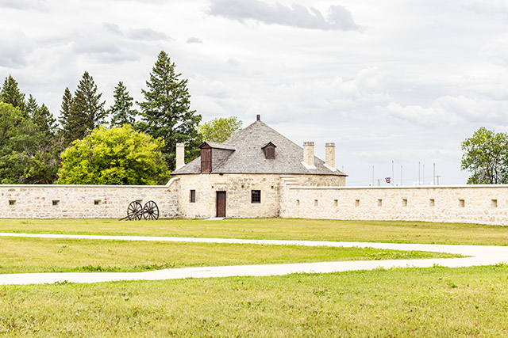
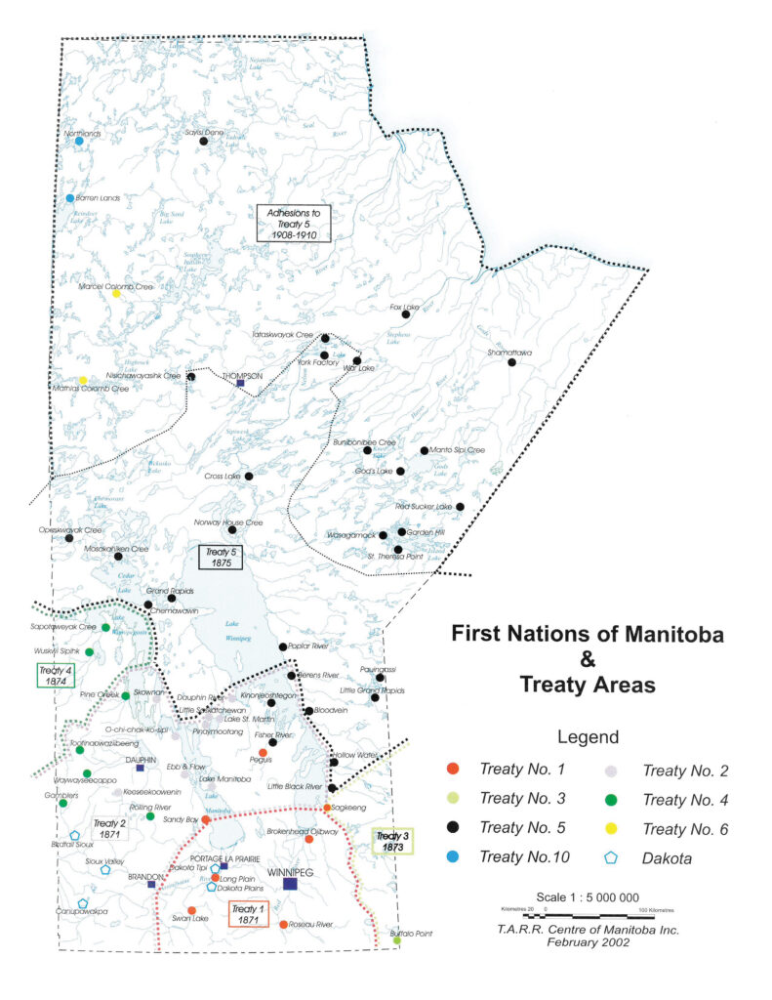
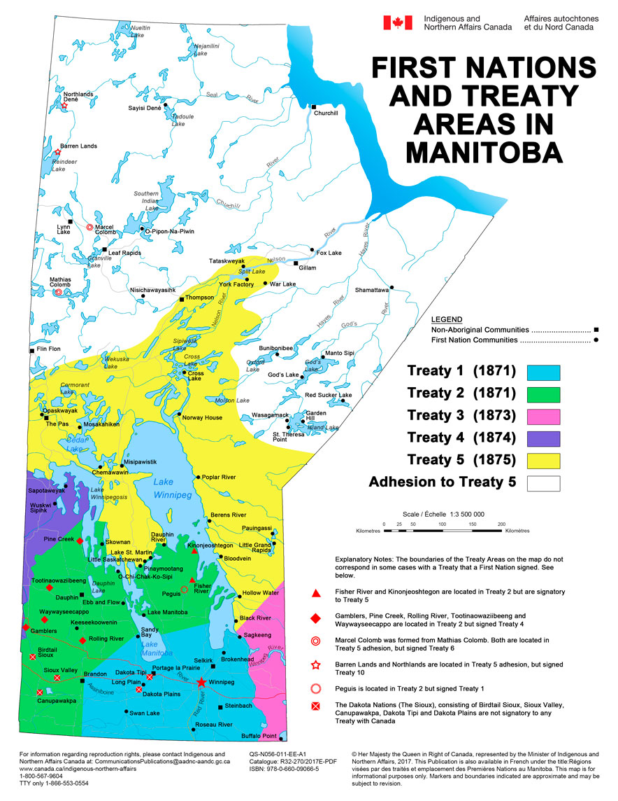

Negotiation & Historical Context
The Gathering at Lower Fort Garry
In August 1871, over 1,000 Anishinaabe and Muskego-Cree people gathered at Lower Fort Garry to negotiate with the Crown. The atmosphere was tense; the First Nations leaders, including Chief Mis-koo-kenew (Red Eagle), were not merely "surrendering" land but seeking a framework for coexistence and protection against the rapidly expanding waves of settlement.

Terms & The "Outside Promises"
Under the official written terms of the Treaty, the Crown agreed to set aside reserve lands calculated at 160 acres per family of five.
However, a defining feature of Treaty 1 is the discrepancy between these written terms and verbal agreements. First Nations leaders only signed after receiving verbal "Outside Promises" for:
- Agricultural supplies such as ploughs and harrows to transition economies.
- Livestock, including oxen and cows, for farming needs.
- Distinguished clothing for Chiefs and their councillors.
These verbal promises were not formally added to the written treaty until 1875.
Geographic Boundaries
Treaty 1 Territory
The territory covers approximately 16,700 square miles. Its borders extend from the US-Canada border north to the shores of Lake Winnipeg.

Provincial Context
This map shows Treaty 1 in relation to the rest of Manitoba. It is the geographic foundation upon which the city of Winnipeg was built.

Participating First Nations
The treaty was signed by leaders representing seven distinct nations, primarily of Anishinaabe (Ojibway) and Cree descent.
Brokenhead Ojibway Nation
Long Plain First Nation
Peguis First Nation
-
Roseau River Anishinabe First Nation
Sagkeeng First Nation
-
Sandy Bay Ojibway First Nation
Swan Lake First Nation
Treaty 1 in the 21st Century
Naawi-Oodena Urban Reserve
The Kapyong Barracks redevelopment transforms former federal land into a massive multi-use urban reserve, providing an economic engine for all seven Treaty 1 nations within Winnipeg.
Economic Sovereignty
Today, implementation focuses on Economic Development Zones, allowing Nations to exercise their Treaty rights to trade and land use in a modern economy.